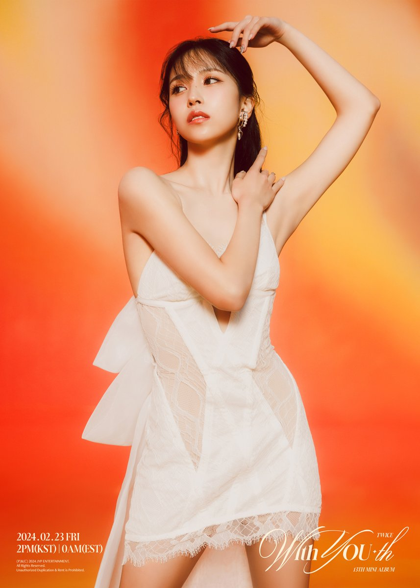
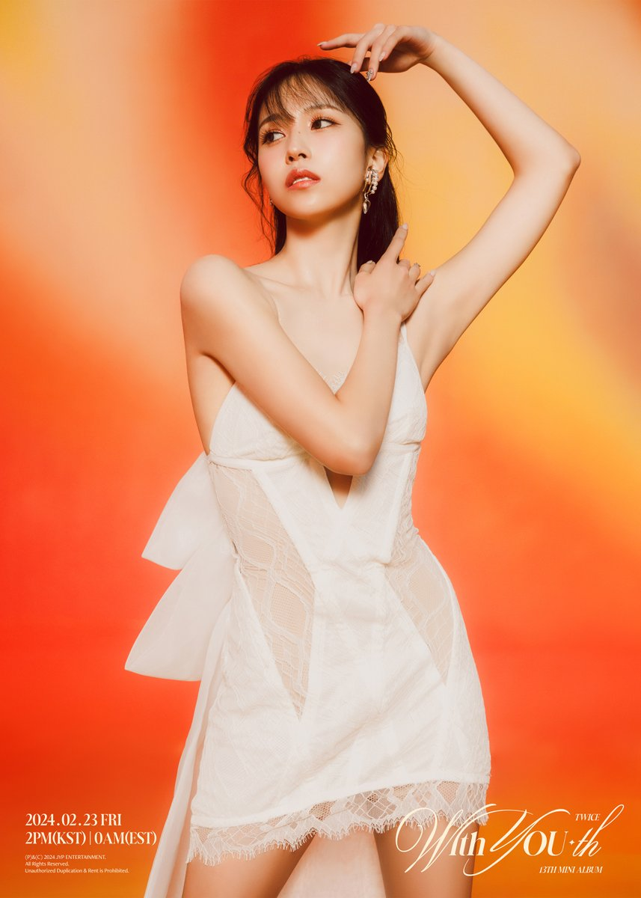

Dear Dudu,
I made this website just for you as a special Valentine's Day gift. I hope you like it!
 


About Twice
Twice is a South Korean girl group formed by JYP Entertainment. They debuted in 2015 and have gained immense popularity with their catchy songs and charming personalities.
Here are a few of their popular songs:
- Like OOH-AHH
- Cheer Up
- TT
- Feel Special
Feel free to explore more about them!
With all my love,
Bubu